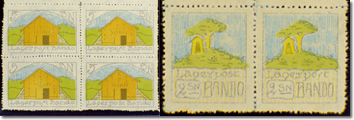

この特別展では、北海道から沖縄まで全国11ブロックで組織された、
郵趣連盟を中心に活動する収集家の優秀な作品を展示します。
中には世界的な評価を受ける作品も出品されますので、
この機会にぜひご覧ください。
なお、展示期間は２週間だけですので、お見逃しのないようにスケジュールをご確認ください。
４月に行われた、日本郵政公社主催の「全日本切手展2006」に近畿支社管内から出品し、優秀な成績を修められた方の内、９名の方の作品を展示いたします。
小型記念通信日付印も用意しておりますので、皆さまぜひご覧ください。

映画「バルトの楽園」が公開されています。この映画は、第１次世界大戦の頃、徳島県鳴門市にあった板東俘虜収容所の物語であり、日本で初めてベートンベン作曲の「交響曲第九・歓喜の歌」を演奏したことで知られています。
しかし、その収容所内で切手が発行されたことをご存知でしょうか。
当博物館では、この映画の公開に合わせて、この板東俘虜収容所切手を特別に展示しています。是非ご覧ください。
切手の殿堂「切手文化博物館」で、
自慢のコレクションを展示してみませんか。
長い間努力され、研究されてきたあなたの切手コレクションを公開展示してみませんか。
当博物館ではご希望の方に展示会場を提供します。
公開されたコレクションは当館の公式展示として、貴名および出品名を永く記録に残し、記念証を贈ります。
展示は、切手コレクションを主に、郵便・郵趣全てのコレクションを対象にし、コンクールなどに出品された絵手紙や切手をモチーフにした作品も歓迎します。（立体作品は不可）
詳しくは、博物館までお問い合わせください。
【出展要領】
- 出展規模および会場費
※フレーム及びリーフは全日展・国際展の標準サイズとします。個人 団体・グループ 出展規模 10フレーム以内 18フレーム以内 会場費
（入館券購入）50枚以上購入（大人料金500円の入館券） １フレームのリーフ数 12〜16リーフ - 出展期間は２週間単位とし、出展希望日の２ヶ月前までにお申し込みください。ただし、出展は毎月一組しかお受けできませんので予めご了承ください。
- 展示の準備・撤去は出展者で行い、応援補助者を必要とする場合は、それぞれに出展者本人を含め５名以内とします。受付で入館証を受け取り、必ず帯同してください。
- 出品物の盗難保険は、原則として出展者が付保してください。希望があれば斡旋します。
- 出展期間中は、できる限り出展者自身が展示場に待機して、説明するようにし、展示物の概略を説明したパネルや配布できる説明資料なども準備してください。
- 申し込まれた出展内容を切手文化博物館運営委員会で審議し、当博物館の主旨にそぐわないものは受け付けないことがあります。
「特別展」出展申込書をダウンロードする（PDFファイル 8KB）
【お申し込み先】
〒651-1401 神戸市北区有馬町663-3
切手文化博物館 宛
| PDFファイルをご覧頂くにはAdobe Readerが必要です。 お持ちでない方はお手数ですが、左のバナーをクリックし、ダウンロードしてご覧ください。 |